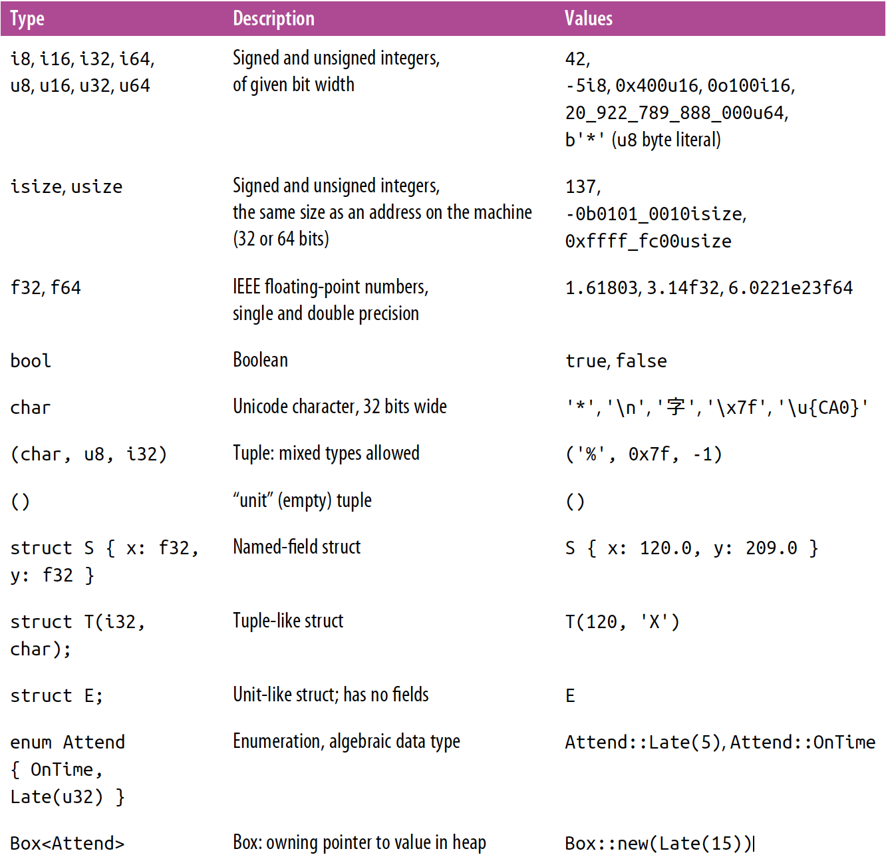
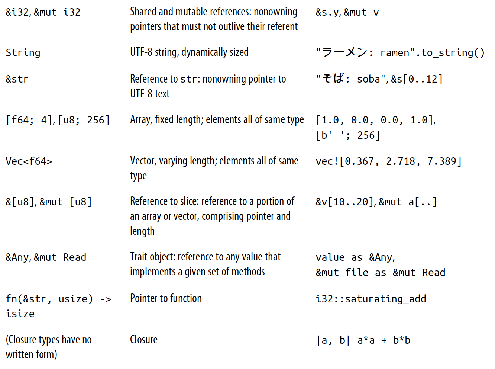
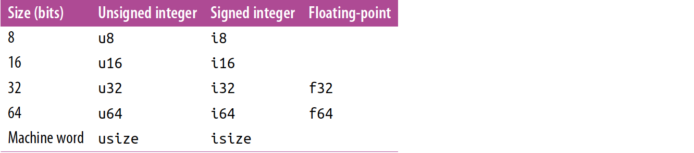
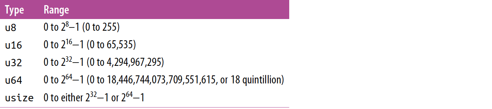
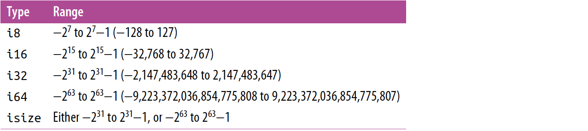
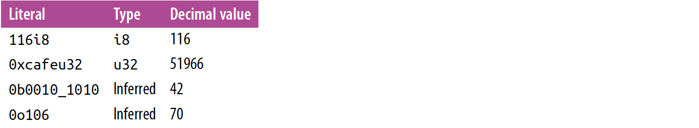
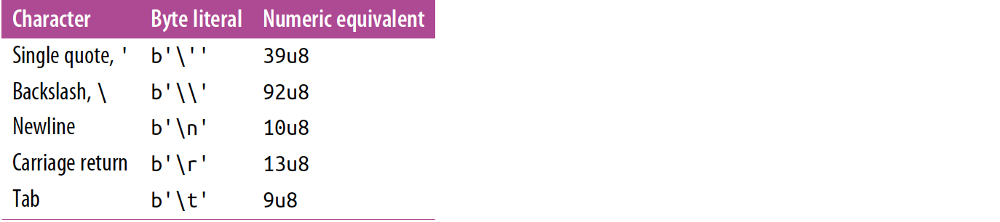
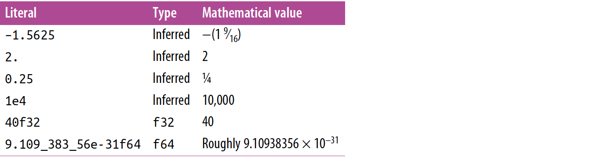

译者序
动机
《Programming Rust》对Rust初学者非常友好，然而遗憾的是，到目前为止(2020/06/03)这本书国内还没有译版，故我们决定翻译此书，来帮助那些可能还不习惯阅读英文技术文档但又想学习Rust的人。
如何阅读
-
[推荐]请确保你的Rust版本>=1.39并且安装了Cargo
- 安装文档构建工具:
cargo install mdbook - 将本仓库克隆到本地:
git clone https://github.com/TENX-S/Programming-Rust-Translation.git - 切换到该仓库工作目录
cd Programming-Rust-Translation - 构建本书
mdbook serve - 根据提示访问: http://localhost:3000 或其他
- 安装文档构建工具:
-
[在线版本] 记得收藏本网站哟
目标读者
我们假定读者符合下列条件之一：
- 已经了解或熟悉C/C++，懂得指针/引用的概念和内存管理
- 掌握至少一种OOP编程语言(Python, Java, ...)
非目标读者
若你不具备上述条件，但想挑战自己，满足自己的好奇心或其他。我们的观点是，这样学习Rust的效率将会非常低下，比难懂的更糟的是，你形成了错误的第一印象，这也许会对你以后的学习历程产生难以预料的影响。
加入我们!
这个项目是开源的，如果您对Rust有相当程度的了解并对英语翻译有信心，欢迎提交您的译文。即使您只是Rust初学者，也可以将遇到的任何有关翻译上的疑惑反映到issues上。我们欢迎所有热情并充满信心的人。如何贡献？
作者


LICENSE
Apache 2.0
序言
Rust是一门系统级编程语言
因为大多数程序员都不熟悉系统级编程语言，故最近有一些关于它的解释，而这正是本书内容的基础。
你关上笔记本，然后操作系统就会检测到这个动作，于是暂停所有正在运行的程序：关闭屏幕，并让电脑进入睡眠💤。后来，你打开笔记本：屏幕和其他东西都又打开了，并且每个程序都可以从它停止的地方开始运行。我们认为这是理所当然的，但系统级编程的程序员们为此编写了很多代码。
系统级编程应用于：
- 操作系统
- 各种硬件设备
- 文件系统
- 数据库
- 在极其廉价的设备运行代码或设备必须非常可靠
- 密码学
- 媒体解码（用于读写音频、视频和图像文件的软件）
- 处理媒体（例如，语音识别或编辑照片的软件）
- 内存管理（例如，实现垃圾收集）
- 文本渲染（将文本和字体转换为像素）
- 开发高级编程语言（像JavaScript和Python)
- 网络
- 虚拟机和软件容器
- 科学中的模拟
- 游戏
简而言之，系统级编程是资源受限的，它存在于每个字节和CPU周期中。
支持一个基本应用程序所涉及的系统代码数量是惊人的。
这本书不会教你系统级编程。事实上，如果你自己没进行过一些系统级编程，那么这本书涵盖的有关内存管理的许多细节乍一看会让你觉得很深奥但又没必要。而如果你是一位经验丰富的系统级编程的程序员，你会发现Rust是一种特殊的工具：它消除了困扰了整个行业几十年的主要的、大家都很熟悉的问题。
目标读者
如果您已经是一名系统级程序员，并且想使用C++的替代品，那么这本书就是为你准备的。如果您是任何编程语言(无论是C#、Java、Python、JavaScript或其他)的资深开发人员，这本书也适合你。
然而，你不只是需要学习Rust。要充分利用这门语言，你还需要获得一些系统级编程的经验。我们推荐阅读这本书，同时也在Rust中实现一些系统级编程方面的项目。利用Rust的速度、并发性和安全性来构建一些你以前从未构建过的东西。这篇序言开头的应用列表或许会给你一些思路。
阅读姿势
本书的前两章介绍了Rust，并在第3章讨论基本数据类型之前进行了简单的介绍。第4章和第5章讨论了所有权和引用的核心概念。我们建议按顺序读完前五章。
第6章到第10章涵盖了语言的基础知识:表达式(第6章)，错误处理(第7章)，crates和模块(第8章)，结构体(第9章)，枚举和模式(第10章)。在这里略读一下是可以的，但，相信我们，不要跳过错误处理这一章。
第11章涵盖了trait和泛型，这是你需要知道的最后两个重要概念。特征就像Java或c#中的接口。它们也是Rust支持将类型集成到语言本身的主要方式。第12章展示了trait如何支持操作符重载，第13章涵盖了更多的实用特征。
理解特性和泛型即可解锁本书的其余部分🍺。闭包和迭代器是两种重要的强大工具，不要错过它们哦，这两种工具将分别在第14章和第15章中介绍。之后可以按任意顺序阅读剩下的章节，也可以根据需要随意浏览。它们涵盖了语言的其余部分:集合(第16章)、字符串和文本(第17章)、输入和输出(第18章)、并发(第19章)、宏(第20章)和不安全(第21章)。
本书中使用的惯例
在本书中使用了以下排版惯例:
斜体 表示新术语、url、电子邮件地址、文件名和文件扩展名。
固定宽度 用于程序段，以及在段落中引用程序元素，如变量或函数名、数据库、数据类型、环境变量、语句和关键字。
等宽粗体 表示用户应该按字面输入的命令或其他文本。
固定宽度斜体 表示应由用户提供的值或由上下文确定的值替换的文本。
|...|
译者注：|...|表示略去了不重要的部分，通常是与编程无关的主题，下同。
使用代码示例
补充材料(代码示例、练习等)可从https://github.com/oreillymedia/programming_rust 下载。
|...|
第一章 为什么用Rust？
名人名言略
自50年前我们开始用高级编程语言去写操作系统至今，系统级编程语言已经走过了一段相当长的路，但还有两个人人皆知的特定问题仍未解决。
- 很难写出安全的代码，尤其困难的是在C/C++中正确地管理内存。几十年来，我们一直在忍受着由此带来的后果————安全漏洞，其最早的形式可追溯到1988年的Morris蠕虫病毒。
- 很难进行多线程编程，然而这却是充分利用现代机器性能的唯一方法。甚至是颇有经验的程序员处理多线程代码时也得小心翼翼：因为并发会导致一些新型bug，并使普通bug更难重现。
而Rust正是：一门性能比肩C/C++，同时还注重安全和高效并发的语言。
Rust是一门由Mozilla和社区贡献者发明的新型系统级编程语言。与C/C++一样，Rust给程序员提供了管理内存的有效手段，并在语言的原生操作和运行该语言的机器的原始操作之间保持了密切的联系，帮助我们预测性能的开销。Rust的伟大愿景与Bjarne Stroustrup的论文"Abstraction and the C++ Model"中对C++期盼的一样：
一般来说，由C++编写的代码遵循零开销原则：你不需要为了不使用的东西而付出什么。更进一步地说：你所正在使用的，已经是最好的代码了。
为了这个愿景，Rust给自己设定了关于内存安全和可信任并发的目标。
达成上述目标的关键是Rust的新颖的所有权系统，移动(moves)和借用(brorrows)，编译时检查和小心谨慎的设计去完备Rust灵活的静态类型系统。所有权系统为每一个值都明确了生命周期，使得语言的核心部分不需要实现垃圾回收(GC)，并为管理其他类型资源如套接字和文件句柄使用了合理且灵活的接口。“移动”将值从一个所有者转移到另一个，而“借用”可以让代码暂时使用一个值却不影响它到所有权。因为许多程序员在此之前从未遇到过这些特性，我们将在第四章和第五章详细地讲解。
Rust不是一门真正的面向对象语言，尽管它具有一些面向对象的特性。Rust不是一门函数式编程语言，尽管它确实倾向于函数式编程那样，让计算结果的影响更加明确。Rust在某种程度上类似于C/C++，但这些语言的习惯用法却并不适用于Rust。因此，经典的Rust代码在很大程度上并不类似于C/C++的代码。所以最好还是保留对什么是Rust的判断，然后看看习惯了这种语言之后你的想法。
为了在现实应用中获得设计上的反馈，Mozilla用Rust开发了一个新的Web浏览器引擎Servo，Servo的需求和Rust的愿景很好地匹配：浏览器性能良好并安全地处理不可信的数据。Servo使用Rust的安全并发性去处理C/C++无法并行化的工作。事实上，Servo和Rust是一起成长起来的，Servo使用最新的语言特性，而Rust则是根据Servo开发人员的反馈一点一点进化的。
类型安全
第二章 一次Rust之旅
下载和安装Rust
一个简单的函数
编写并运行单元测试
处理命令行参数
并发
曼德勃罗集合的本质
解析命令行参数
将像素映射为复数
画出集合
写入图像文件
一个并发的曼德勃罗程序
运行曼德勃罗绘图器
隐藏的安全性
基本类型
世界上有许多种好书是因为有很多种人，并且每个人都想读点与众不同的东西。
—Lemony Snicket
Rust的基本类型的设计基于下面几个目标：
安全
通过程序的类型检查，Rust编译器排除了所有类别的常见错误。通过使用类型安全的替代品去替换空指针和未经检测的元组，Rust甚至能够消除其他语言中因常见的崩溃原因引发的错误。
效率
程序员可以对Rust程序中如何呈现内存中的值进行细粒度的控制，并且能选择自己知道处理器可以有效处理的类型。程序没有必要为了不使用的通用性和灵活性付出代价。
简洁
[TODO:未明确的翻译]Rust不需要程序员以在代码中写类型的方式提供导向[Rust manages all of this without requiring too much guidance from the programmer in the form of types written out in the code.]，它会自己处理好这些事情。与相似的C++的程序相比来说，Rust程序中的类型更整洁。
相较于使用解释器或者即时编译(JIT)的编译器，Rust旨在使用预编译：在开始执行之前，整个程序就已经转为机器代码了。Rust的类型系统帮助预编译器为程序使用的值选择适合的机器级表示：可以预测其性能的表现并完全使用机器的功能。
Rust是一个静态类型的语言：程序不会实时运行，编译会检查所有可能的执行路径，将仅与其类型一致的方式使用值。这允许Rust去提前捕捉程序的错误同时这也对Rust的安全保证至关重要。
相较于JavaScript或Python这种动态类型语言，Rust需要你提前计划：你必须声明函数的参数类型和返回值的类型，结构成员的类型和一些其他构造。然而，Rust的两个特性使得其麻烦程度比你预期的要少：
- 给定一个你声明的类型，Rust会为你推断出剩下中的大多数。实际上，通常只有一种类型适用于给定的变量或表达式；在这种情况下，Rust允许你忽略该类型，例如，你可以向下面这样声明函数中的每种类型：
#![allow(unused_variables)] fn main() { fn build_vector() -> Vec<i16> { let mut v: Vec<i16> = Vec::<i16>::new(); v.push(10i16); v.push(20i16); v } }
但这样就显得重复且杂乱无章了。从给定了函数的返回值类型可以明显的看出v的类型必然是Vec<i16>，一个存储了16位有符号整数的向量；其他类型可能不起作用。从以上我们可以得知，所定义的vector的每一个元素类型必须为i16。这正是Rust进行类型推断的推理方式，允许你向下面这样写：
#![allow(unused_variables)] fn main() { fn build_vector() -> Vec<i16> { let mut v: Vec<i16> = Vec::<i16>::new(); v.push(10); v.push(20); v } }
这两个函数定义完全等价；对这两个函数而言，Rust会生成相同的机器代码，类型推断使得动态语言的可读性大大提高，同时也能捕捉编译时的错误。
- 可定义泛型函数：当一个函数的目的和实现足够宽泛的时候，你可以定义其在任何类型集上以满足必要的标准。单个定义可以涵盖一组开放式用例。
在Python和JavaScript中，函数的行为的很自然：一个函数可以操控任何其所需的拥有属性和方法的值，（这个特性被称为鸭子类型：如果它活动起来像鸭子，那么他就是鸭子）但这个灵活性也恰恰使得让这些语言很难提前发现类型错误。测试往往是捕捉类似错误的唯一办法。
Rust的泛型函数赋予语言同样的自由度，并且仍然在编译时捕捉类型错误。尽管具有灵活性，但是泛型函数和非泛型函数的效率一致。我们会在第11章中讨论泛型函数。
下面是你在Rust中会看见的几种类型的总结。这个表格给出了Rust的原生类型，标准库中很常见的类型和用户自定义类型的例子：
译者注：限于时间和精力，图片暂不做翻译，下同
  除了以下列出的，这些类型中的大多数本章都会涉及：
- 我们在第九章单独讲
struct - 我们将在第十章单独讲enumrated类型
- 我们在第十一章介绍特性（trait）
- 我们在这里会介绍一些
String和&str的要点，但在第十七章中提供更多细节 - 我们在第十四章介绍函数和闭包类型
机器类型
Rust的类型系统基于一组固定宽度的数字类型，并匹配几乎所有现代处理器直接在硬件中实现的类型，以及布尔和字符类型。
Rust的数字类型的名称遵循常规模式，以位为单位拼写其宽度及其使用的表示形式： 
在这里，机器字是代码在运行的机器上的地址的大小，通常为32位或64位。
整数类型
Rust的无符号整数类型全部用来表示正值和零：
Rust的带符号整数类型使用两者的补码表示形式，并使用与相应的无符号类型相同的位模式来覆盖正值和负值的范围：

Rust通常将u8类型用于字节值。例如，从文件或套接字读取数据将产生u8值流。
不同于C/C++，Rust将字符类型区别与数字类型；一个char既不是u8也不是i8，我们将稍后讲到char类型。
usize和isize类型类似与C/C++中的size_t和ptrdiff_t，usize类型是无符号的而isize类型是带符号的。它们的精确度依赖于目标机器地址空间的大小：它们在32位架构上是32位长的，在64位架构上是64位长的。Rust规定数组索引是usize的。表示数组或向量的大小或者某种数据结构所含元素的数量的值一般都用usize类型。
在调试环境下，Rust会检测算数溢出：
#![allow(unused_variables)] fn main() { let big_val = std::i32::MAX; let x = big_val + 1; }
在发型版本中，这个加法的结果会变成一个负数（不同于C++，带符号整数溢出是未定义的行为）。但是除非你想永远放弃调试，依靠于这样的行为不是一个好主意。当你想到得到溢出算术结果时，用这个方法：
#![allow(unused_variables)] fn main() { let x = big_val.wrapping_add(1); }
Rust中的整数字面量可以用一个后缀来指示其类型：42u8是一个u8，1729isize是一个isize。你可以忽略一个整数字面量的后缀，那样的话Rust会尝试从上下文中推导出它的类型。这个推导通常会定义一个特别的类型，但有时几个类型中任意一个都有效。在这种情况下，如果i32类型在那几个可能性中，Rust会默认选择它。否则，Rust会将这种模棱两可的情况视为一个错误并报出。
前缀0x，0o和0b表示十六进制，八进制和二进制。
为了使长整数更具可读性，你可以在数字中插入下划线。比如，你可以这样写最大的u32整数的值：4_294_967_295。下划线具体放在哪里无关紧要，所以你可以在十六进制或二进制中每隔四个而不是三个来放置下划线，比如0xffff_ffff或者将类型后缀与数字分离127_u8。
下面是一些整数字面量的例子：

尽管数字类型和char类型是分开的，Rust却提供了字节字面量(byte literals)，字面量的字符类似于u8的值：b'X'表示作为一个字符X的ASCII码（u8值）。例如：我们都知道字符'A'的ASCII码是65，字面量b'A'和65u8是完全等价的。字节字面量中只会出现ASCII字符。
下面几个字符你不能仅仅使用单引号来表示，因为那会使得句法上模棱两可或者难以阅读。所以需要一个反斜线放在它们前面。

如果一些字符难以读写，你可以使用它们的十六进制码来代替。一个形如b'\xHH'的字节字面量，HH是任意两个十六进制数，代表了值为HH的字节。例如，因为‘escape’控制字符的ASCII码为27或者十六进制下的1B，你可以将其写为b'\x1b'的字节字面量。因为字节字面量仅仅只是u8值的另一种表示，所以当考虑一个简单的数字字面量是否更易读：即当你只想强调一个值代表ASCII码时，可能用b'\x1b'相比于仅用27更符合情理。
你可以使用as算子对整数进行类型转换，我们将在第六章：表达式中类型转换这一节解释转换的细节，但先看下面几个例子吧：
#![allow(unused_variables)] fn main() { assert_eq!( 10_i8 as u16, 10_u16); assert_eq!( 2525_u16 as i16, 2525_i16); assert_eq!( -1_i16 as i32, -1_i32); assert_eq!(65535_u16 as i32, 65535_i32); // 超出目标范围的转换所产生的值为原始值模2^N // 其中N是目标的宽度（以位为单位） // 这有时被称为截断。 assert_eq!( 1000_i16 as u8, 232_u8); // 1000 mod 2^8 = 232 assert_eq!(65535_u32 as i16, -1_i16); //65535 mod 2^16 = -1 assert_eq!( -1i8 as u8, 255_u8); // -1 mod 2^8 = 255 assert_eq!( 255_u8 as i8, -1_i8); // 255 mod 256 = -1 }
类似于任何其他类型的值，整数也有方法。标准库提供了一些基本的操作，你可以从在线文档中进行查阅。注意到那个文档包含类型本身的单独页面（例如，搜索"i32 (primitive type)"）,对于该类型的模块（搜索“std::i32”）。例如：
#![allow(unused_variables)] fn main() { assert_eq!(2u16.pow(4), 16); // 求幂 assert_eq!((-4i32).abs(), 4); // 绝对值 assert_eq!(0b101101u8.count_ones(), 4);// 数量 }
这里的字面量的类型后缀是必需的：Rust如果不知道值的类型就不能寻找它的方法。在真实的代码中，然而，通常会有其他上下文来消除类型的歧义，因此后缀是非必需的。
浮点类型
Rust提供IEEE单双精度的浮点了行。且遵循IEEE 754-2008规范，这些类型包含正负无穷，不同的正零和负零值以及一个非数字值： Rust的f32和f64对应于支持IEEE浮点的C/C++实现的float和double类型，并且也对应于习惯使用IEEE浮点的Java。
浮点字面量的一般形式如下图所示：
整数部分后面的三个部分都是可选的，但至少要出现一个以区别于整数字面量，小数部分(fractional part)可能包含一个单独的小数点，所以 5.是一个合法的常数。
如果一个浮点数没有类型后缀，Rust会从上下文中推断它是f32还是f64，如果都有可能，则默认为f64。（类似的，C/C++和Java都把无后缀的浮点字面里看成是double值。）为了类型推断，Rust将整数字面量和浮点字面量视为不同的类：即永远不会将一个整数字面量推断为浮点类型，反之亦然。
下面是一些浮点字面量的例子：

标准库的std::f32和std::f64模块定义里IEEE要求的特殊值像INFINITY,，NEG_INFINITY（负无穷），NAN（非数字，not a number），还有MIN和MAX（最大和最小的有限值）。std::f32和std::f64模块提供了多种常见的数学常量像E,PI和根号2。
f32和f64类型题哦那个了完整的数学计算方法；例如，2f64.sqrt()是双精度的根号2。标准库文档使用"f32 (primitive type)"和“f64 (primitive type)”来描述它们：
下面是一些例子：
#![allow(unused_variables)] fn main() { assert_eq!(5f32.sqrt() * 5f32.sqrt(), 5.); assert_eq!(-1.01f64.floor(), -1.0); assert!((-1. / std::f32::INFINITY).is_sign_negative()); }
正如之前所述，通常在实际代码中，你不需要写这些类型后缀因为上文会决定这些类型。然而，如果不是这样，由此引发的错误信息会令人惊讶。举例，下面这行代码无法通过编译：
#![allow(unused_variables)] fn main() { println!("{}", (2.0).sqrt()); }
Rust提出:
error: no method named sqrt found for type `{float}` in the current scope
这令人意想不到；除了浮点类型，还有哪里能找到sqrt方法呢？解决的办法是用一种或另一种方式声明你想要的类型：
#![allow(unused_variables)] fn main() { println!("{}", (2.0_f64).sqrt()); println!("{}", f64::sqrt(2.0)); }
不同于C/C++，Rust几乎没有隐式类型转换。如果一个函数需要一个f64的参数，则传递i32的值作为其参数是错误的。事实上，即时每个i16的值都是i32的值，Rust也不会将i16的值隐式转换为i32的值。但是这里的关键词是隐含的：你始终可以使用as运算符写出明确的转换：i as f64或者x as i32。缺少隐式转换会使得Rust的表达式相较于类似的C/C++代码更冗长。然而，有一份完善的记录表明，隐式整数转换会引起错误和安全漏洞；根据我们的经验，在Rust中写出数字转换使我们警惕了本来会错过的问题。我们会在第六章：表达式中类型转换这一节解释转换的细节。
布尔类型
Rust的布尔类型bool具有通常的两个值，true和false。像==和<这样的比较符提供了bool值：2<5是true，许多语言允许你在需要布尔值的上下文中使用其他类型的值：C/C++隐式地将字符，整数，浮点数和指针转换为布尔值，因此，它们可以直接用作if或while语句中的条件。Python允许你在布尔值的上下文中使用字符串，列表，字典，甚至集合，如果这些值是非空的，将其视为true。然而，Rust在这一点上非常严格：像if和while这样的控制结构要求其条件为布尔表达式，逻辑运算符&&和||也是如此。你必须写成if x != 0 {...}而不仅仅是if x {...}。
Rust的as算子可以将bool类型转为整数类型：
#![allow(unused_variables)] fn main() { assert_eq!(false as i32, 0); assert_eq!(true as i32, 1); }
然而，as不会反方向转换，即从数字类型到bool。相反的，你必须明确地写出类似于x != 0这样的比较。
尽管一个布尔值仅需一个位来表示它，Rust会使用内存中一整个字节在存储布尔值，所以你可以创建一个指向它的指针。
字符
Rust的字符类型`char`代表了单个的32位的Unicode字符。 Rust位单个字符单独使用`char`类型，但是为字符串和文字流使用UTF-8编码。所以，一个`String`表示它的文本是一个UTF-8的字节序列，而不是一个字符数组。字符字面量由单引号括起来的字符，像'8'或者'!'。你可以使用任何你喜欢的Unicode字符：'錆'是一个char字面量，表示日本汉字sabi(rust)。
与字节文字一样，一些字符需要反斜杠转义：

如果你愿意，你可以使用十六进制写出字符的UniCode的码位点：
- 如果字符的码位点在U+0000到U+007F范围内（也就是说，如果它的范围是ASCII的字符集合），那么你可以将字符写为'\xHH'，其中HH是一个两位的十六进制数字。例如，字符字面量
'*'和'\x2A'是等价的，因为字符*的码位点是42，或者十六进制下的2A。 - 你可以将任何Unicode字符写为
'\u{HHHHHH}'，HHHHHH代表1至6位长的十六进制数。例如，字符字面量'\u{CA0}'代表字符“ಠ”，是不赞成的表情的UniCode中的一个卡纳达语字符，“ಠ_ಠ”。同样的字面量也可以简单的写成'ಠ'.
一个char始终是范围为0x0000到0xD7FF或者0xE000到0x10FFFF的Unicode码位点。一个char永远不会是代理对的一半[A char is never a surrogate pair half]（即，码位点从0xD800到0xDFFF），或者Unicode码位空间之外的一个值（即，大于0x10FFFF）。Rust使用类型系统和动态检查确保char值始终在允许范围内。
Rust永远不会在char和其他类型间进行隐式转换。你可以使用算子as将一个char转换为一个整数类型；对小于32位的类型，字符值的高位被截断：
#![allow(unused_variables)] fn main() { assert_eq!('*' as i32, 42); assert_eq!('ಠ' as u16, 0xca0); assert_eq!('ಠ' as i8, -0x60); //U+0CA0截断为8为，带符号 }
从另一个方向看，u8是算子as转换char所使用的唯一类型：Rust想让as算子执行小代价，可靠的转换，但是u8以外的每个整数类型都包含不允许的Unicode代码点的值，因此这些转换需要在运行时检查。相反地，标准库函数std::char::from_u32接受任何u32值并返回一个Option<char>：如果这个u32是一个非法的Unicode码位点，那么from_u32返回None；否则，它返回Some(c)，c是一个char。
标准库为字符提供了一些有用的方法，你可以从在线文档中搜索“char (primitive type)”，对于模块“std::char”来说。举例如下：
#![allow(unused_variables)] fn main() { assert_eq!('*'.is_alphabetic(), false); assert_eq!('β'.is_alphabetic(), true); assert_eq!('8'.to_digit(10), Some(8)); assert_eq!('ಠ'.len_utf8(), 3); assert_eq!(std::char::from_digit(2, 10), Some('2')); }
自然，孤立的单个字符不如字符串和文本流那么有趣。我们将在本章的字符串类型这一节广泛地讨论Rust标准库中的String类型和文本处理。
元组
元组是各种类型的若干元素的集合。你可以将一个元组写为一个用逗号分隔，圆括号括起的元素序列。例如，`('Brazil', 1985)`是一个元组，其第一个元素是静态分配的字符串，第二个元素是一个整数；它的类型是`(&str, i32)`（或者是任何Rust为1985推断出的整数类型）。给定一个元组`t`，你可以用`t.0`，`t.1`等等获取它的元素。元组不太像数组：一方面，元组的每个元素的类型可以互不相同，但数组的元素的类型必须一致。另外，元组只允许常数作为索引，像t.4。你不能写成t.i或者t[i]去索引第i个元素。
Rust代码中元组类型常被用作从一个函数返回多个值。例如，split_at方法作用与字符串切片上，将一个字符串分为两半并返回它们，它的声明类似于这样：
#![allow(unused_variables)] fn main() { fn split_at(&self, mid: usize) -> (&str, &str); }
它的返回类型(&str, &str)是包含两个字符串切片的元组。你可以使用元组解构（pattern-matching syntax）将返回值的每个元素分配给不同的变量：
#![allow(unused_variables)] fn main() { let text = "I see the eigenvalue in thine eye"; let (head, tail) = text.split_at(21); assert_eq!(head, "I see the eigenvalue "); assert_eq!(tail, "in thine eye"); }
下面这个比解构更易读：
#![allow(unused_variables)] fn main() { let text = "I see the eigenvalue in thine eye"; let temp = text.split_at(21); let head = temp.0; let tail = temp.1; assert_eq!(head, "I see the eigenvalue "); assert_eq!(tail, "in thine eye"); }
你还可以看到元组被用作一种最小-drama结构类型。在第二章提到的Mandelbrot程序中，我们需要给函数传递图像的宽度和高度，让它绘出该图像并写入磁盘。我们可以声明一个包含宽度和高度成员的结构，但是对这么显而易见的事情来说这样的声明过于繁杂了，所以我们就用一个元组。
#![allow(unused_variables)] fn main() { /// 将缓冲区“ pixels”（其大小由“ bounds”指定）写入名为“ filename”的文件。 fn write_image(filename: &str, pixels: &[u8], bounds: (usize, usize)) -> Result<(), std::io::Error> { ... } }
bound参数的类型是(usize, usize)，即包含两个usize值的元组。我们固然可以把宽度和高度的参数分开写，并且这两种方式得到的机器码大致相同。这事关声明是否清楚，让人理解。我们将大小视为一个整体的值，而不是两个。使用元组可以让代码与我们的意愿一致。